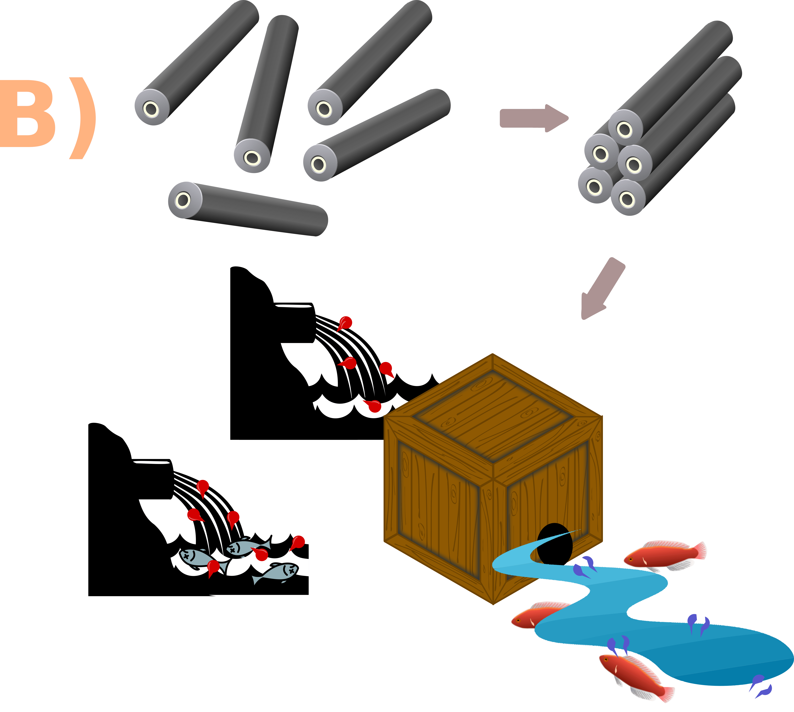

As for the implementation, our team had to envision CellOPHane on the real world, making sure to
make a safe feasible device. We have integrated expert advice and our own considerations in our
process. Our work is founded on concepts of an efficient user interface and clever device design. A
rigorous study of who could be benefited the most from the device was performed. However, we
recognize that challenges still exist that needs to be solved for our hardware prototype.
From the very beginning of our iGEM journey, we planned for CellOPHane to be a real product, useful
in real life. We realise that, at this point, we are still too far from the actual practical
implementation of our device, but we have quite a precise idea of how it will all function together.
Why are We the Solution
Ultrafiltration (UF) membranes have a pore size of 0.1 to 0.01μm (i.e. 10 to 100nm) and are capable
of removing particulates, bacteria and viruses. Interestingly, bacterial cellulose (BC) sheets
naturally have pore sizes in this range. Current ultrafiltration cannot remove small molecule
contaminants such as pesticides. While nanofiltration and reverse osmosis membranes can exclude
these small molecules, they are expensive and energy intensive to
use. Flow rates are low, they require very high pressures and the input water must be
already
purified by primary as well as secondary processes to avoid damaging the membranes. UF processes are
currently limited by the high cost of synthetic membranes. Inevitable membrane fouling means
they
must be regularly replaced. Their use is also restricted by limitations in removal of small molecule
contaminants. They can only be employed where feed water is free of these contaminants or in tandem
with other (often slow or energy intensive) treatment methods for removing them.
Microbial cellulose membranes are considerably cheaper than competitors. Whilst polyvinylidene
fluoride (PVDF) ultrafiltration membranes cost as much as about $100 / m2, current BC
production for
nata de coco costs around $1.6 / g. Existing literature and the work of iGEM Imperial 2014 suggest
that BC is a durable material. However, we expect a shorter membrane life compared to the highly
durable PVDF. Being considerably cheaper and easier to dispose of, BC membranes could be more
regularly replaced and still provide a more cost effective solution. This would also save on
chemical washes regularly required to sustain the extended life of PVDF membranes.
Proposed End Users and Sites
People closely associated with farmland and agriculture are expected to derive a direct benefit from
CellOPHane. This group includes farmers, pesticide vendors, people living near croplands, soil
scientists, and administration to name a few. However, if we think deeply, each and every person in
the society would potentially be benefitted from our implementation, given the OP pollution is such
rampant and with devastating consequences.
CellOPHane vows to save everyone from the wrath of organophosphate insecticides by providing access
to clean, OP-free water. We believe CellOPHane to not only be effective but also friendly to nature
and biodiversity. Therefore, it could be used in natural reserves, natural aquaparks, water tanks or
other water bodies where maintaining water quality, as well as biodiversity, is a priority.
The basic plan can also be tweaked to come up with various products - like protective clothing for
farmers, decontamination wipes for pesticide spills, demilitarization tool of nerve agents - to name
a few.
Implementing CellOPHane in the Real World

In our filter, inner walls of PDMS microchannels will be coated with Organophosphate
degrading enzymes (A)
These channels are assembled together to produce the final hardware prototype (B)
We imagine the final product to be filter blocks or filter units. Each unit would consist of
multiple millimetre radius cylindrical PDMS channels whose inner surface is coated with
functionalized BC filter material. Optimizing the number per unit, arrangement, dimension, shape,
length, and area of cross-section of the channels would require a lot of further studies.
We have thought of two alternative modalities to run the filtration process
The first one utilizes a frequency generator in order to reap the benefits of capillary action
in purifying OP-contaminated water. It requires low energy input and is potentially portable.
However, it might be less practical as it is very difficult to collect a significant portion of
agricultural runoff in a reservoir.
To address the same, we can depend on the second modality: Using a pump to pass agricultural
runoff through the array of channels. This method is energy intensive but brings some added
advantages. The filter units can be installed side by side (i.e. in parallel) as often as
desired to increase the (input) flow rates. By connecting several filter units in
series, the degree of degradation of the organophosphate molecules could be uplifted. Thus, this
method allows for a high degree of flexibility, for a perfect adaptation to the conditions on
site, and makes a scale-up easy.
As of now, we are clueless about the optimal modality our hardware should adopt. We will do further
work in this direction to find out the same.
We must devise some methods for post-filtration waste disposal as well. Degradation of
organophosphates through our method gives rise to phosphodiester and a phenol derivative. Iodine,
which is also used as a disinfectant for agro-effluent, can be added to the water sample coming out
of our proposed prototype. It converts the organic phosphates present in it into inorganic
phosphate. Then, we can add slaked lime to this water to get a precipitate of calcium phosphate, a
soil fertilizer. Using this strategy, one would be able to get fertilizer, a value-added product,
from harmful organophosphate residues! Nitrophenol degradation can be brought about by using a
modified version of our plug-n-play platform itself or by relying upon US-ZVI method. We encourage
future iGEM teams to look into this! Finally, the effluent will be passed through activated charcoal
or mesh of coconut fibres in order to get rid of the remnants of iodine used. Interestingly, this
plan combats eutrophication in addition to OP pollution at one go.
Safety and Security
Proper safety rules are not only critical for the sake of our conscience but are also defined by
law. Since we were working with genetically modified organisms (GMOs), safety was very important
throughout our project. It was necessary to work consciously and safe, to ensure that neither the
environment nor humans are harmed. may not get outside of the lab. We needed to take precautions to
prevent our genetically modified E. coli from escaping.
Like project development, project implementation also involves plenty of safety aspects. These make
our approach applicable almost everywhere where organophosphate pesticides get into water:
Our hardware prototype is completely cell-free. The only place where we use living chassis is
during bioproduction of the individual hardware components. After BC overproduction, one must
subject the BC pellicles to alkaline wash to kill the attached bacteria (i.e. K.
xylinus or A.
tumefaciens). We have used our chassis (i.e. E. coli) only as an expression host, as we
intend
to purify and use the proteins of interest produced by it. Using chassis as merely an expression
host avoids contamination of the environment with the chassis itself. By using immobilized
enzymes, we are not dependent on living, expressing organisms on site, thus avoiding the
regulations for genetically modified organisms (GMO).
From the very beginning the most important point in our project was environmental protection.
The degradation products of a typical organophosphate are a phosphodiester and a phenol
derivative. It is proven that these degradation products pose a lower risk to ecosystem
than the
substrates.
Organophosphate pollution is of great concern not only in India but also all over the world.
Thus, it was essential for us to fight this problem with an environmentally friendly
method
since most existing methods to OP bioremediation are ecologically harmful and not functionally
adequate.
The water flowing through the device can slough off the coat of functionalized filter with time.
However, it poses no harm to the environment as both bacterial cellulose and proteins are
biodegradable.
PDMS tubes can cause microplastics pollution if they undergo oxidation, mechanical disturbance,
exposure to chemicals. However, the risk of microplastics pollution is low from the
proposed
device as the array of channels are to be placed inside a box (ideally closed system) and the
channels cannot come into contact with water due to the coating of functionalized filter.
Even if we go by the frequency generator modality, the risk of injury owing to the moving
parts
is negligible. On the other hand, there is risk of electrocution in the water pump
modality.
However, mishaps can be kept at bay by proper maintenance of electrical junctions, wire
insulation, fuse, and earthing.
Trace amount of OP can linger on to BC substratum without getting degraded. As the functional
filter layer gets worn out with time, need would arise to take the device away from filtration
site, to take the channels out, to get rid off the remnants of old filter, and then to apply new
coating via dip coating. After taking the channels out, one must .
Dip coating process involves organic solvents which are harmful to health and
inflammable. These
must be disposed off with care.
Beyond the studies that can help determine the technical aspects of our desired prototype, it
must undergo a comprehensive trial phase before it is released for real-life usage.
After the device is installed, the functioning has to be monitored meticulously. A
complementary
online and/or offline questionnaire would also be sent to the potential end-users.
Challenges
The implementation of a synthetic biology project comes with multifaceted challenges. These hurdles
must be overcome in order to come up with an efficient device.
Ensuring the safety and security aspects of our project is one of the major challenges.
We are also aware of the controversy and fear surrounding GMOs in the eyes of the general
public
and it might present a great challenge for the implementation of our project. We believe that
this is often caused by misinformation or manipulation of the general public. Therefore, we take
it as our personal goal to disseminate accurate, rational and easily digestible information
about synthetic biology and educate as many people as possible about OP pollution. This has been
reflected in our Public Education and Engagement activities.
The biggest challenge is the effectiveness of CellOPHane against high concentration of
organophosphate pesticides in agricultural runoff. It would be best to use the filter
device at
the earliest possible stage of runoff treatment. However, it has not been possible for us to
test to what extent our device can mitigate OP pollution.
Considering the financial burden of launching our product, the launch could be
potentially done
through aid of our sponsors and our institute. Locating grants and potential investors is going
to be another challenge.
The hardware part presents the biggest obstacle to the realization of our project.
Although we
have quite detailed plans, all aspects need to be considered again and planned and modelled
carefully so the final product will work flawlessly and effectively. Also, as we realised during
our stay at the lab, the practical realisation of one's ideas can be much more complicated than
first assumed. Therefore, it might take a long time to implement CellOPHane in the real world.
Nevertheless, we are working towards this goal with passion.
Envision
Several months were spent on CellOPHane, and throughout the journey we identified and visualized how
other people could use our project and the science behind it to make something useful for various
target groups.
With our project, we hope to draw the attention of future research teams to the topic of water
cleanliness as well as mitigation of agricultural hazards. Utilizing our plug-n-play filter
platform, other research groups in future would come up with their own bioremediation tool against
pollutions other than that caused by OP. We sincerely hope for their system as well as design to be
more sophisticated compared to ours as it stands now. Our work - comprising of engineering, wet lab,
dry lab, and human practices - might serve as inspiration to them.
Future Prospects
1. The Organophosphate Filter
When we started out on the project, we had a vision of being able to bring about a difference in the
lives of farmers with our filter. While we have been able to create a Proof of Concept with the
resources and time we had, but there is a still a long way to go before we can improve and optimize
our model and the hardware design to the extent required in an industrial setting. Going forward, we
have four broad objectives in this category:
Work with experts to help scale up the production of our filters for distribution
Work with industrialists and other hardware specialists who can help us modify our hardware into
an implementable design
Talk to stakeholders and understand how these filters can be incorporated into fields and sewage
treatment plants, as well as other locations.
Implement them in industries and carry out further optimizations.
The Plug-n-Play Model
The filter is just one implementation of the plug-n-play model. Another long-term objective for us
would be to see where is this model can find applications. Diagnostics and medicine are just one set
of examples we thought of, where this model could be used in conjunction with setups similar to
dialysis machines to detect compounds or remove toxins from blood. There will be many other such
applications that are yet to be found, and although each application will require a different
hardware design, the plug-n-play model could lead to efficient solutions for those problems.
Mautner A, Lee KY, Lahtinen P, Hakalahti M, Tammelin T, Li K, Bismarck A. Nanopapers for Organic
Solvent Nanofiltration. Chem. Commun. (Camb). 2014 Jun 1;50(43):5778-81. doi:
10.1039/c4cc00467a
Lee KY, Buldum G, Mantalaris A, Bismarck A. More Than Meets the Eye in Bacterial Cellulose:
Biosynthesis, Bioprocessing, and Applications in Advanced Fiber Composites. Macromol.
Biosci.
2014 Jan;14(1):10-32. doi: 10.1002/mabi.201300298
Poirier L, Brun L, Jacquet P, Lepolard C, Armstrong N, Torre C, Daudé D, Ghigo E, Chabrière E.
Enzymatic Degradation of Organophosphorus Insecticides Decreases Toxicity in Planarians and
Enhances Survival. Sci. Rep. 2017 Nov 9;7(1):15194. doi: 10.1038/s41598-017-15209-8
Lai B, Chen Z, Zhou Y, Yang P, Wang J, Chen Z. Removal of High Concentration p-nitrophenol in
Aqueous Solution by Zero Valent Iron with Ultrasonic Irradiation (US-ZVI). J. Hazard. Mater.
2013
Apr 15;250-251:220-8. doi: 10.1016/j.jhazmat.2013.02.002
Leivo J, Virjula S, Vanhatupa S, et al. A Durable and Biocompatible Ascorbic Acid-based Covalent
Coating Method of Polydimethylsiloxane for Dynamic Cell Culture. Journal of the Royal Society,
Interface. 2017 Jul;14(132). DOI: 10.1098/rsif.2017.0318
Vitolaa G, Mazzeia R, Poerioa T, Porziob E, Mancob G, Perrottac I, Militanoa F, Giornoa L.
Biocatalytic Membrane Reactor Development for Organophosphates Degradation. Journal of Hazardous
Materials. 2019 Mar;365:789-795. doi: 10.1016/j.jhazmat.2018.11.063